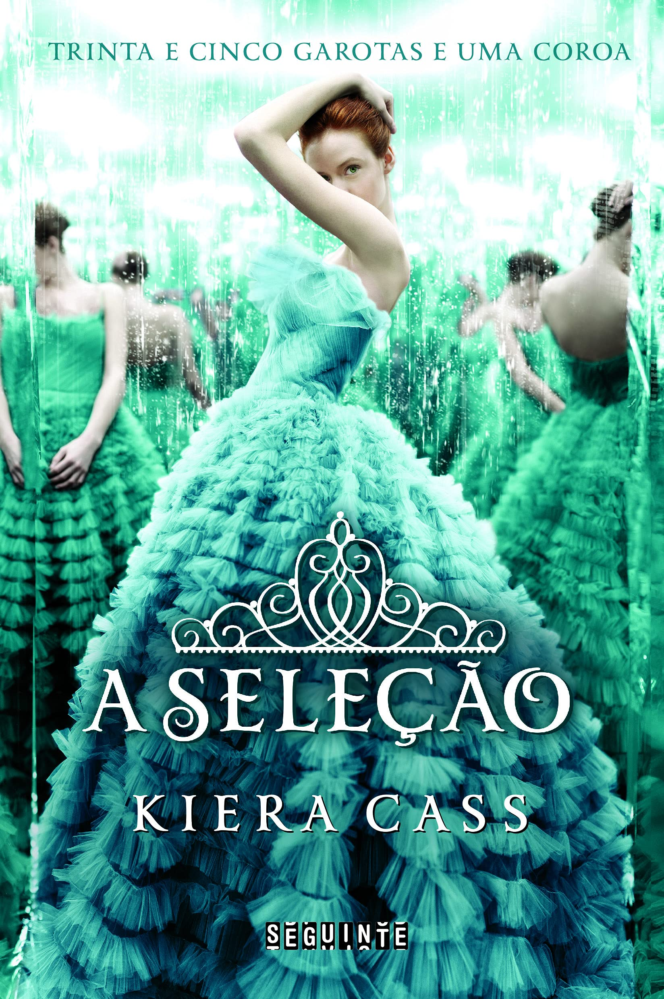

| Harry Potter 1, 2, 3, 4, 5, 6 e 7 |
J.K. Rowlling |
3067 |
☆☆☆☆☆ |
 |
| Com amor, Simon |
Becky Albertalli |
272 |
☆☆☆ |
 |
| Fazendo meu filme 1, 2, 3 e 4 |
Paula Pimenta |
1696 |
☆☆☆☆ |
|
| Minha Vida Fora de Série 1 e 2 |
Paula Pimenta |
832 |
☆☆☆ |
 |
| Percy Jackson 1, 2 e 3 |
Rick Riordan |
1040 |
☆☆☆ |
 |
| Trono de Vidro 1, 2, 3, 4, 5, 6 e 7 |
Sarah J. Maas |
4606 |
☆☆☆☆☆ |
 |
| A lâmina da Assassina |
Sarah J. Maas |
406 |
☆☆☆☆ |
|
| Rainha Vermelha 1, 2 e 3 |
Victoria Aveyard |
1460 |
☆☆☆☆ |
 |
| Corte de Espinhos e Rosas 1, 2, 3 e 4 |
Sarah J. Maas |
2492 |
☆☆☆ |
 |
| A Seleção 1, 2 e 3 |
Kiera Cass |
1075 |
☆☆☆☆ |
 |
| Descanse em paz, meu amor... |
Pedro Bandeira |
120 |
☆☆☆ |
|
| Six of Crows 1 e 2 |
Leigh Bardugo |
1088 |
☆☆☆☆☆ |
|
| Os sete maridos de Evelyn Hugo |
Taylor Jenkins Reid |
360 |
☆☆☆☆☆ |
 |
| Cidade da Lua Crescente |
Sarah J. Maas |
896 |
☆☆☆ |
|
| Vermelho, branco e sangue azul |
Casey McQuiston |
392 |
☆☆☆☆☆ |
|
| Sua Alteza Real |
Rachel Hawkins |
304 |
☆☆☆☆ |
 |
| Destruidor de Mundos |
Victoria Aveyard |
560 |
☆☆☆ |
 |
| Avyssos |
Mariana Lucioli |
413 |
☆☆☆☆ |
|
| O princípe Cruel 1, 2, 3 e 4 |
Holly Black |
1268 |
☆☆☆☆ |
 |
| Heartstopper 1 e 2 |
Alice Oseman |
609 |
☆☆☆☆☆ |
|
| Um de nós está mentindo |
Karen McManus |
355 |
☆☆ |
 |
| Ás de Espadas |
Faridah Àbíké-Íyímídé |
442 |
☆☆☆☆☆ |
|